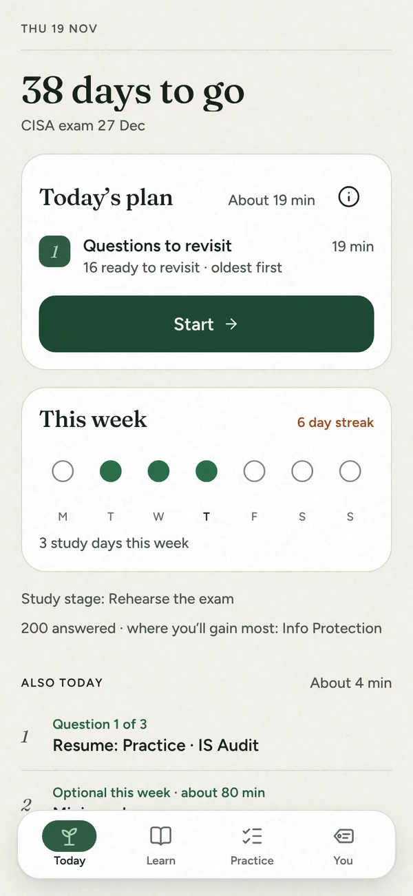
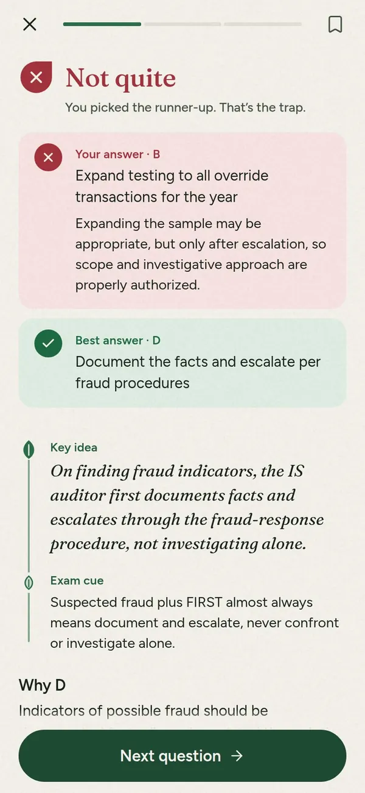
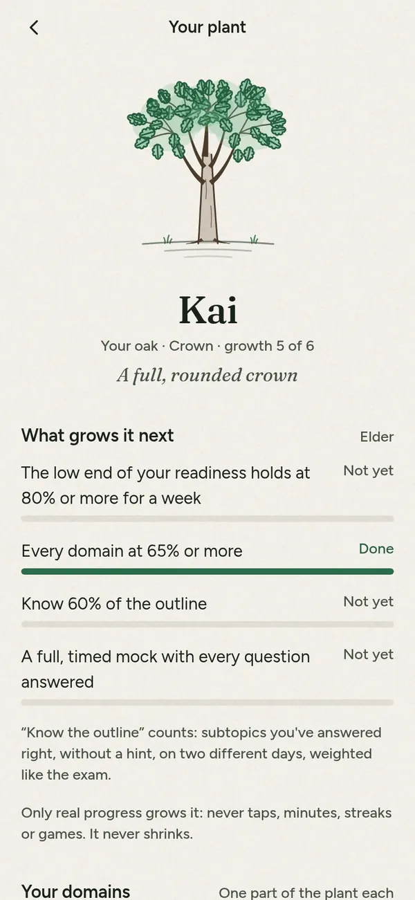
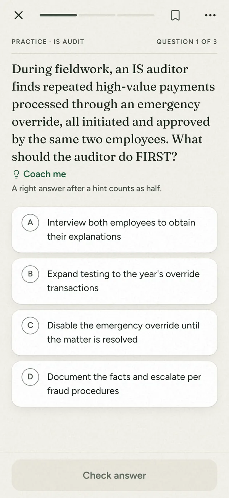

01 / Start with a plan
Your next step, already in view.


The study companion for your auditor mindset
CISA practice that goes beyond the answer. Find your focus, learn the principle, keep growing.
Android closed testing · Web and iOS upcoming
01 / Start with a plan

02 / Understand the why

03 / Keep growing

A look inside
Five real screens from the Android app. Scroll through a session the way a learner would move through it.
Your daily plan brings the next study session into focus. The readiness range reflects your practice, not a promise of an exam result.
Actual app screen · illustrative study dataWork through scenario-based questions that ask what an auditor should do first. Stuck? Ask the coach for a hint.
Actual app screen · illustrative study data
See why the best answer wins, where the trap lies, and which auditor principle to carry into the next question.
Actual app screen · illustrative study dataShort lessons and study notes explain each idea in plain language, one screen at a time.
Actual app screen · illustrative study data
Your plant grows with real progress. A quiet reminder that small sessions add up over time.
Actual app screen · illustrative study dataLess guesswork. More understanding.
CISA asks you to think like an auditor. KaiSip helps you practice that perspective, with room to learn from the choices you make.
Every answer review names the key idea and the exam cue, so the lesson outlasts the question.
Plain-language notes connect a principle to the real world.
A readiness range and your weakest area, updated as you practice. A guide, not a guarantee.
Return to your daily plan, review what needs attention, and watch your plant grow with your study.
Illustrative study dataA little encouragement, along the way
One tester quote, five samples.
Cards marked “Fictional sample” are design placeholders, not real reviews.
Sample text will be replaced with permission-based feedback before launch.
Before you join
KaiSip is in Android closed testing. Our proposed waitlist will keep you informed about launch news. This design preview does not register you or create an app account. For current Android testing, visit the beta program.
This waitlist form is a mockup: it validates your entries without sending or saving them. For the current Android testing steps, eligibility and tester reward terms, read the beta program details.
Public web app access is upcoming. This page focuses on the Android experience.
No. KaiSip is independently built and is not affiliated with or endorsed by ISACA. CISA® and ISACA® are registered trademarks of ISACA.
Stay in the loop
Tell us where you’d like to use KaiSip. Get launch news for web, Android, and iOS when there’s something to share.
Android is in closed testing. Web and iOS access are upcoming.